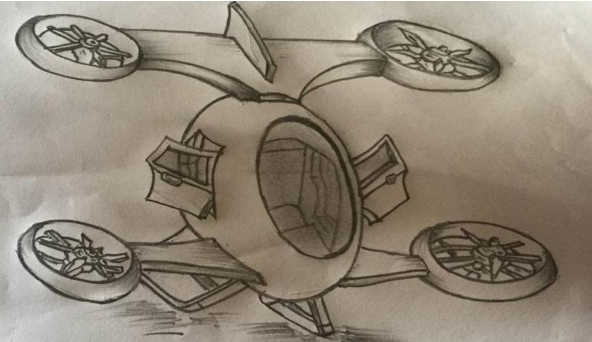
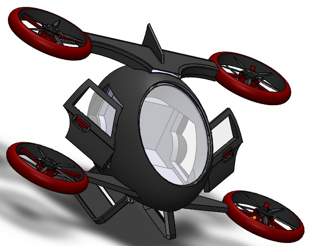

COMMERCIAL DRONE
- Introduction
- The future of modern transportation
- The Problem
- Requirements
- Evaluation Criteria
- Alternative Models
- Safety and risks assessment
- Decision Matrix
- Pictures of the Design Process
Drones are used in several sectors for many important functions. In this project a new version of a drone is created; this is a commercial drone which will transport humans and cargo or luggage. These drones will solve several transportation problems, since they are well built to move very fast and to withstand all difficult weather conditions.
The most important aspect of these drones is that they are very eco-friendly, this means that they do not release any pollutants such as carbon (IV) oxide and silicon dioxide which deplete the ozone layer into the atmosphere. Hence these commercial drones are less costly, easy to drive, safe and above all eco-friendly.
The first passenger drone was unveiled on January 6 of 2016 at the international Consumer Electronics Show (CES) in Las Vegas. Produced by Ethang, a Chinese company based in Guangzhou, the 184 was a one passenger drone equipped with four propellers that could fly for approximately 23 minutes at a top speed of 63 mph. Passenger drone looks like a small helicopter. The drone runs on electric battery and carries a single passenger weighing up to 100kg at a time. The drone fits the person together with a small backpack, an air condition and a reading light. It gives two commands that’s the take off and land just with a single touch on a tablet. Remote security threats on commercial drone such as Man-In-The-Middle (MITM) attack have exposed the vulnerabilities in current drone system. Passenger drone can be very noisy; a single passenger drone such as Joby Aviation’s all-electric vertical take-off and landing aircraft has an estimated noise pollution of 70 db. Passenger drones can greatly reduce the time travel. As passenger drones flight paths are not restricted by conventional roads, the travel distance is shortened. It can be used for emergency services such as search and rescue missions and the delivery of life saving goods. Companies like Ethang have already begun using passenger drones as emergency vehicles as a response to the potential river bank failure during the flood season in China.
Rapid and safe transport is needed in the health sector for transporting patients during emergencies. Rapid transport is also needed in the safety and rescue departments such as the security services and fire service to protect lives and property. Moreover, there is the general need for safe and rapid transport in commercial transport. Due to lack of safe and rapid transport, all of the above mentioned sectors encounter a lot of difficulties when performing their duties and operations. Therefore, there is the need to find the best solution to all of these transport problems.
There is the need to construct an ultramodern mode of transportation which will be very fast, less costly, safe, and convenient to be used in the health, public, security, commercial and rescue sectors. This mode of transport should be able help to curb the problem of bad roads, loss of human lives due to delay in transporting patients and also help to quickly solve issues relating to fire outbreaks and floods.
| Functional Requirements | Design Requirements |
|---|---|
| Drone should hold as least a minimum of two individuals and maximum of four (three passengers and the pilot for a manually controlled system) | Must have four propellers and a streamlined shape to enhance effective flight so as to withstand air pressure |
| Drone must be able to fly at high altitudes and withstand air resistance in severe weather conditions of rainstorms | Transparent glass for easy vision and two exit doors |
Without any doubt, passenger drones have set to change the way humans transport themselves forever. Seriously, this is one welcome idea, considering the number of cars that ply our roads every day. The human population continues to explode and the roads really wouldn’t be able to handle it for long. They are already super-choked. Analysis of such conditions has led to the creation of a passenger drone. The questions stand? Is it safe and how effectively efficient will this drone be? Will it serve its purpose and are there challenges or unexpected outcomes? This evaluation criteria seeks to address all pressing issues ranging from sustainability through to the analysis of the final design.
| Factor | Observation |
|---|---|
| Length | Excellent |
| Width | Very good |
| Surface | Well-maintained air strip (should work in any condition related to climate change) |
| slope | Slope is hardly noticeable (land based on wind and direction of control) |
| Ground obstacles | Any obstacles should be obvious and easy to avoid |
| Approach obstacles | Any obstacles should be obvious and easy to avoid |
| Landing directions | Possible landing directions are specified. 360 means that the passenger drone should be easy to land from any direction. |
MODELS TAKEN INTO ACCOUNT
- Passenger drone with conventional rotor blades: Model A
- Passenger drone with Fenestron rotor blades: Model B
Model A ( CONVENTIONAL ROTARY)
Model B ( FENESTRON ROTARY)
This commercial drone consists of four conventional rotary wings(open wing system). Each rotary wing consists of a rotary motor and two rotary blade system each. The drone runs on electrical energy; which makes it rechargeable . This drone flies automatically, the destination only has to be input it’s GPS system. It has a flight time of 23 minutes and a recharge time of 2 to 3 hours. Due to the conventional wing system, this drone has a maximum capacity to carry more load ( about four to five average weight individuals). but at a relatively slow rate.
This commercial drone consists of four Fenestron rotary wings(closed wing system). Each rotary wing consists of a rotary motor and two rotary blade system each. This drone has a hybrid energy system, it recharges automatically by absorbing solar energy due to it’s dark surface and embedded system of rechargeable solar cells beneath it surface; and it can also be electrically charged for 2 to 3 hours. This drone flies automatically, and can also be flown manually. The destination of a passenger can be input into its GPS system. It has an extended period of 30mins after its initial 23 minutes has elapsed. The extended flying time depends on the weather conditions, since the second phase is solar powered. Model B travels relatively faster but carries an average number of load, maximum load is about three average weight individuals.
The safety and risk evaluation assessment below is done based on the analysis of the two models A and B. The purpose is to make a vivid analysis so as to select a suitable model of the passenger drone that serves its purpose efficiently and effectively.
1- Poor 2- Good 3- Excellent
| CATEGORY | RISK ITEM | EFFECT | CAUSE | MODEL A(WEIGHT) | MODEL B(WEIGHT) | ACTION REQUIRED |
|---|---|---|---|---|---|---|
| Technical | Flight malfunction | Drone falls and damages | Motor malfunction or flight controller error | 2 | 3 | Inspect drone before and after each flight |
| Incorrect programming | Corrupts data collection of images | Program bugs not found | 2 | 3 | Review programming and correct all bugs | |
| Over-consumption of power | Low flight time | Too much drawn by onboard devices | 2 | 3 | Calculate the power consumption rate | |
| Inability to record thermal video | Lack of thermal video | Inability to use proprietary software on board the drone | 3 | 3 | Thoroughly research the capabilities of onboard storage devices | |
| Safety | Injury from blades | Severe cuts to team member or spectator | Improper safety or knowledge when in close contact to a running drone | 1 | 3 | Be sure there is always maintained clearance from running drone |
| Injury from falling drone | Impact injuries to head and body | Poor piloting or clearance from a flying drone | 1 | 3 | Be sure there is always maintained clearance from running drone | |
| Environment or Social | Battery safety | Polluting the environment with battery waste | Polluting the environment from improper disposal of batteries | 3 | 3 | Read on how to properly dispose used batteries |
| Campus rules | Inability to fly on campus in undesignated areas | Not reviewing campus rules for test flight | 3 | 3 | Read campus rules | |
| Financial | Running over budget | Inability to purchase the necessary components or materials | Improper assessment of necessary project components | 2 | 3 | Taking time to thoroughly research on the parts or materials |
| Resource | Flight Location | Inability to test drone in specific locations | Poor planning of flight locations | 3 | 3 | Plan out flight locations |
| CRITERIA | WEIGHT | MODEL A | MODEL B | ||
|---|---|---|---|---|---|
| - | - | r | wₒ(rₒ-3) | r | wₒ(rₒ-3) |
| Safety | 20% | 2 | -0.2 | 4 | -0.2 |
| Ease of installation | 10% | 3 | 0 | 4 | 0.1 |
| Size | 5% | 3 | 0 | 5 | 0.1 |
| Sustainability | 15% | 3 | 0 | 4 | 0.15 |
| Weight Allowance | 10% | 2 | -0.1 | 3 | 0 |
| Speed | 10% | 3 | 0 | 4 | 0.1 |
| Mobility | 10% | 4 | 0.1 | 4 | 0.1 |
| Efficient power source | 10% | 4 | 0.1 | 4 | 0.1 |
| TOTAL SCORE(Total | 100% | CwA = 0 | CwB = 0.95 | ||
Ranking (r): 1- Poor 2- Average 3- Good 4- Very good 5- Excellent
Conclusion: If the given weights are considered, then it can be said that,
MODEL B is more favorable than MODEL A.
ASSEMBLY OF CAD MODEL
The commercial drone will help to reduce several problems related to transportation around the world, from bad roads and heavy traffic on high ways. This mode of transportation is fast, and very safe; it will also have no negative effect on our atmosphere and ecosystem at large. It runs on solar and electrical energy so it is very eco-friendly. The Fenestron commercial drone is the best and reliable way of transportation for the future.